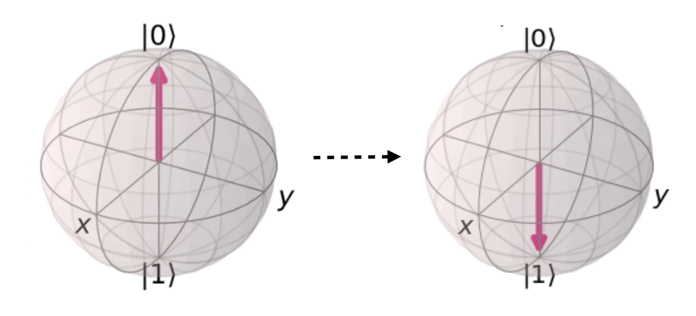

X ゲートは従来の NOT 演算に似た働きをします。 NOT 演算は、0 に適用するとビットが反転して 1
になり、逆に 1 に適用すると 0 になるのでした。つまり、NOT 演算は "0 と 1 を入れ替える"
という働きをします。
NOT 0 {% include arrow_right.svg class="h-4 w-4 mx-2" %} 1
NOT 1 {% include arrow_right.svg class="h-4 w-4 mx-2" %} 0
X ゲートは NOT 演算によく似ていて、量子ビットの {% ket 0 %} と {% ket 1 %} を入れ替えます。
図で表すと、次のような "円の入れ替え" の働きをします。
{{ 1 | qubit_circle: 0, 'lg' }} {{ 0 | qubit_circle: 1, 'lg' }}
{% include minus.svg class="h-6 w-6 fill-current text-neutral-400" %}
{{ 0 | qubit_circle: 0, 'lg' }} {{ 1 | qubit_circle: 1, 'lg' }}
{{ 0 | qubit_circle: 0, 'lg' }} {{ 1 | qubit_circle: 1, 'lg' }}
{% include minus.svg class="h-6 w-6 fill-current text-neutral-400" %}
{{ 1 | qubit_circle: 0, 'lg' }} {{ 0 | qubit_circle: 1, 'lg' }}
X ゲートを回路に置いて、{% ket 0 %} と {% ket 1 %} が入れ替わることを確認しましょう。
{% include mixer_horizontal.svg class="h-4 w-4 text-neutral-700" %}
X ゲートが従来の NOT 演算と異なるのは、重ね合わせ状態にある量子ビットに作用できる点です。
たとえば、次の {% ket 0 %} と {% ket 1 %} の重ね合わせ状態にある量子ビットを考えましょう。
{{ '-0.20015 + 0.44444i' | qubit_circle: 0 }} {{ '0.67819 - 0.54997i' | qubit_circle: 1 }}
これにX ゲートを適用すると、{% ket 0 %} と {% ket 1 %} の内容を交換します。
これはまさに、先ほど見た "{% ket 0 %} と {% ket 1 %} の入れ換え" という効果です。
{{ '-0.20015 + 0.44444i' | qubit_circle: 0, 'lg' }} {{ '0.67819 - 0.54997i' | qubit_circle: 1,
'lg' }}
{% include minus.svg class="h-6 w-6 fill-current text-neutral-400" %}
{{ '0.67819 - 0.54997i' | qubit_circle: 0, 'lg' }} {{ '-0.20015 + 0.44444i' | qubit_circle: 1,
'lg' }}
X ゲートを続けて 2 回適用するとどうなるでしょうか? 図から分かるように、 {% ket 0 %} と {% ket 1 %}
が 2 度入れ替わることで元の状態に戻ります。 つまり、量子 NOT
ゲートはそれ自身を打ち消す効果を持っています。数学ではこれを、「量子 NOT
ゲートはそれ自身の逆演算である」と言います。
{{ '-0.20015 + 0.44444i' | qubit_circle: 0, 'lg' }} {{ '0.67819 - 0.54997i' | qubit_circle: 1,
'lg' }}
{% include minus.svg class="h-6 w-6 fill-current text-neutral-400" %}
{{ '0.67819 - 0.54997i' | qubit_circle: 0, 'lg' }} {{ '-0.20015 + 0.44444i' | qubit_circle: 1,
'lg' }}
{% include minus.svg class="h-6 w-6 fill-current text-neutral-400" %}
{{ '-0.20015 + 0.44444i' | qubit_circle: 0, 'lg' }} {{ '0.67819 - 0.54997i' | qubit_circle: 1,
'lg' }}
重ね合わせ状態の量子ビットにX ゲートを適用し、{% ket 0 %} と {% ket 1 %}
が入れ替わることを確認しましょう。
X ゲートを 2 回適用すると元に戻ることを確認しましょう
{% include mixer_horizontal.svg class="h-4 w-4 text-neutral-700" %}
「X ゲート」の名前の由来は、量子ビット状態をブロッホ球で表すと量子 NOT ゲートは X
軸を中心とした回転操作の一種だからです。
{% margin_note x-gate %}X ゲートは X 軸を中心に π (180度) 回転する操作 (画像クレジット:
qiskit.org ){%
endmargin_note %}

同様に、Y 軸で回転する Y ゲート、Z 軸で回転する Z
ゲートも存在します。さまざまなゲートの回転については、他のゲートを学んだ後で詳しく説明します。
{% include x_gate_help.html %} {% include operation_menu.html %} {% include
operation_inspector_template.html %} {% include circle_notation_popup.html %}